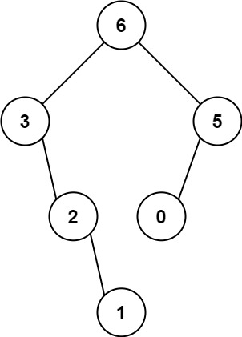
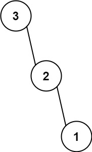

654. 最大二叉树
单调递减栈：新数把栈里比它小的依次弹出（最后弹出的做它的左孩子），再把自己挂上栈顶的右孩子；栈底即根。
思路
- 栈里保存「还没确定右孩子的结点」，从底到顶值递减；栈底始终是当前全局最大（根）。
- 新数
v入栈前：弹出所有< v的结点，最后弹出的（其中最大）成为v的左孩子。 - 栈非空就把
v挂成新栈顶的右孩子；栈空说明v是目前最大，更新根。 - 等价于递归「区间取最大做根」，但一趟扫描完成，不用反复找最大值。
图解
最优解
1import java.util.*;2 3class Solution {4 public TreeNode constructMaximumBinaryTree(int[] nums) {5 // 单调递减栈：栈里从底到顶递减，栈底就是目前为止的最大值6 Deque<TreeNode> stack = new ArrayDeque<>();7 TreeNode root = null;8 for (int v : nums) {9 TreeNode node = new TreeNode(v);10 TreeNode last = null;11 // 新数比栈顶大：弹出的结点都归它管，最后弹出的成为它的左孩子12 while (!stack.isEmpty() && stack.peek().val < v) last = stack.pop();13 node.left = last;14 if (!stack.isEmpty()) {15 stack.peek().right = node; // 新数比栈顶小：成为栈顶的右孩子16 } else {17 root = node; // 栈空：它是目前全局最大，是根18 }19 stack.push(node);20 }21 return root;22 }23}题目
给定一个不重复的整数数组 nums 。 最大二叉树 可以用下面的算法从 nums 递归地构建:
- 创建一个根节点，其值为
nums中的最大值。 - 递归地在最大值 左边 的 子数组前缀上 构建左子树。
- 递归地在最大值 右边 的 子数组后缀上 构建右子树。
返回 nums 构建的 最大二叉树 。
示例 1：

输入：nums = [3,2,1,6,0,5]
输出：[6,3,5,null,2,0,null,null,1]
解释：递归调用如下所示：
- [3,2,1,6,0,5] 中的最大值是 6 ，左边部分是 [3,2,1] ，右边部分是 [0,5] 。
- [3,2,1] 中的最大值是 3 ，左边部分是 [] ，右边部分是 [2,1] 。
- 空数组，无子节点。
- [2,1] 中的最大值是 2 ，左边部分是 [] ，右边部分是 [1] 。
- 空数组，无子节点。
- 只有一个元素，所以子节点是一个值为 1 的节点。
- [0,5] 中的最大值是 5 ，左边部分是 [0] ，右边部分是 [] 。
- 只有一个元素，所以子节点是一个值为 0 的节点。
- 空数组，无子节点。
示例 2：

输入：nums = [3,2,1] 输出：[3,null,2,null,1]
提示：
1 <= nums.length <= 10000 <= nums[i] <= 1000nums中的所有整数 互不相同
题面取自力扣当前版本。
数据快照 2026-11-04。题面版权归力扣所有，本站点仅供本人学习使用，请勿对外发布。